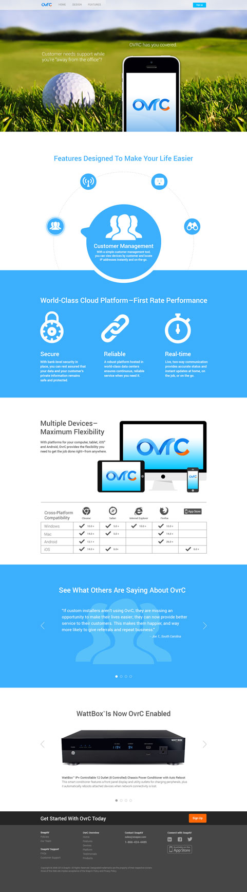
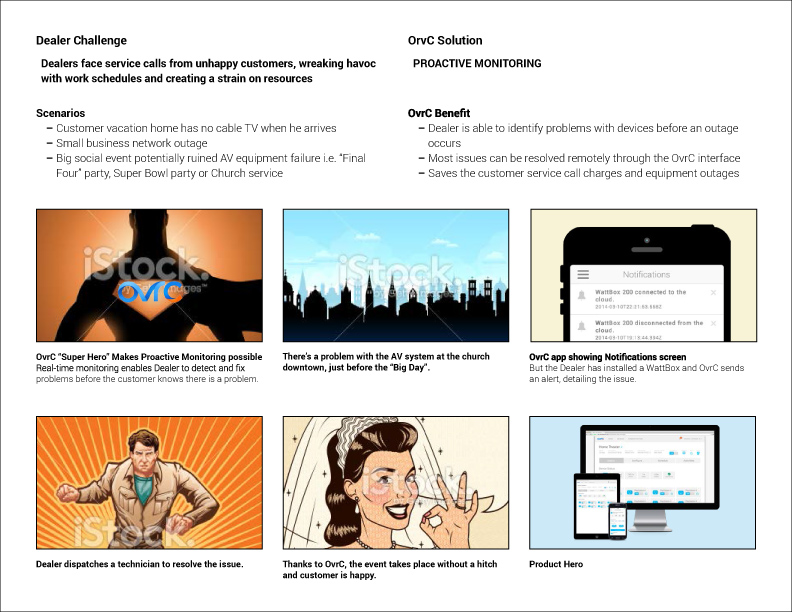
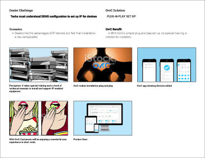
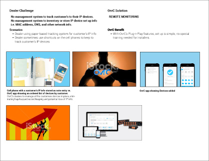
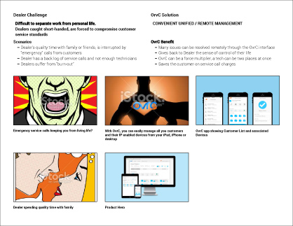
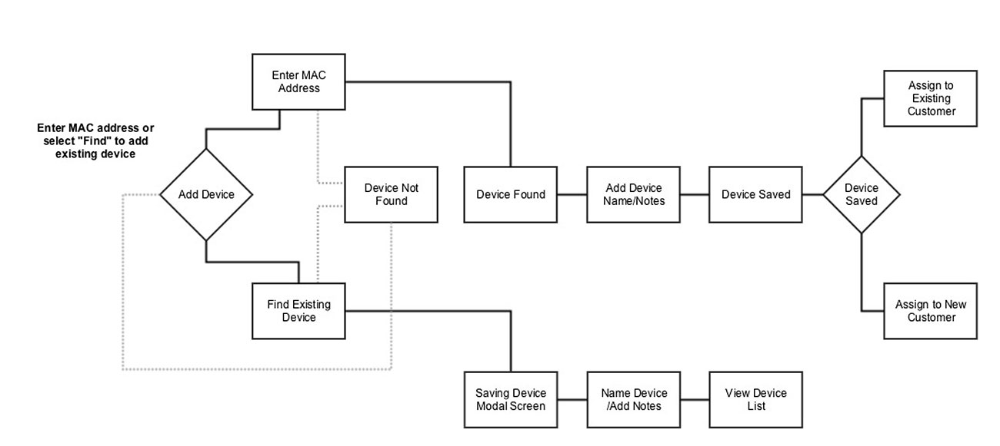
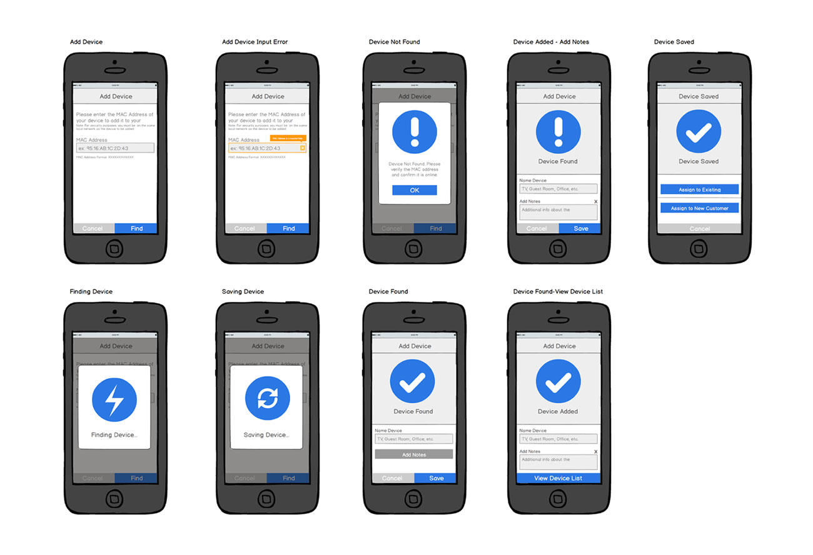
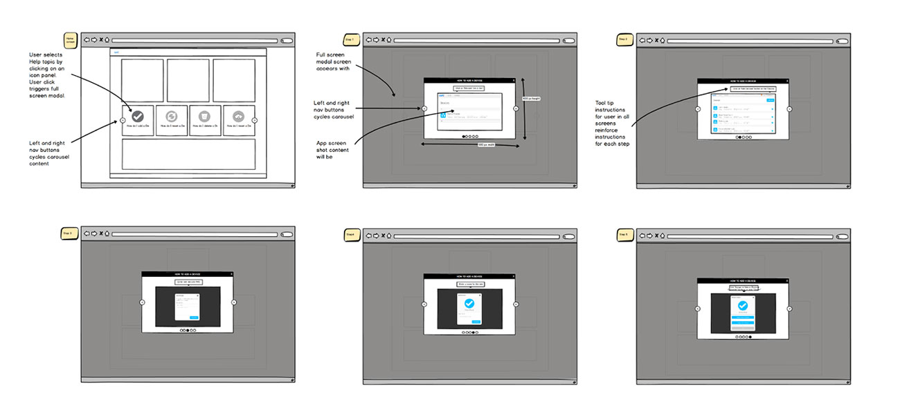
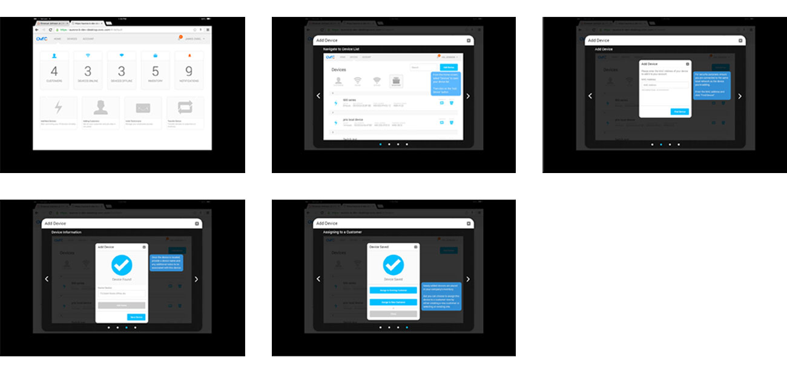

SnapAV's OVRC App
UX Design and Development for OVRC desktop and mobile App
Client: SnapAV, Charlotte, North Carolina USA
About the project: The OvrC app, developed at SnapAV, uses the Internet to contact and control audio/video equipment, directly from a mobile device or computer. This app enables a technician
to diagnose and repair sophisticated audio-visual equipment whether twelve feet up a ladder or relaxing on the golf course.
My Role: I was brought in as a Junior UX Design Consultant to assist in the successful launch of the application – working to help product owners define
and highlight it’s features to the customer through storytelling, as well as producing digital assets and wire frames.
Assets developed:
Landing Page Design
Landing Page Creative Concepts
Concept Storyboards and Personae
Application Wire frames
Photoshop Assets
SVG Application Icon Set
OVRC App Landing page Photoshop mock-up
Storyboards for landing page carousel: Highlights four of the app’s key features
   User flow and app screen wireframes for the "Add a Device" module in the OVRC app

User flow wireframes and final Photoshop files the "Helps" module in the OVRC app
